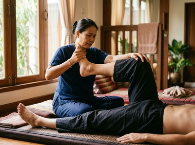
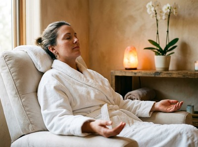

Battery Park sits in the Fort Matilda district of Greenock, nestled between Greenock and Gourock on the banks of the River Clyde.
It is a predominantly residential area of villas and town houses, popular with families, joggers, dog walkers, and anyone who values a quieter setting with outstanding views across the Clyde Estuary to the mountains of Argyll. Thai massage in Battery Park Greenock is well within reach, and Thai Massage Greenock on South Street is the natural choice for residents looking for authentic, therapist-led care close to home.
The Fort Matilda and Battery Park area is home to a community that leads an active, outdoor lifestyle, and the physical demands of that lifestyle take a real toll on the body. Whether you are someone who runs along the Clyde, works long hours at home or at a local business, or simply carries the kind of tension that builds up over weeks without release, a session at Thai Massage Greenock addresses the root of the problem rather than masking it.

Jariya Malone, trained at Bangkok's renowned Wat Po temple, brings authentic Thai technique to every treatment. Every session is personalised, starting with a conversation about how you are feeling that day. You can book your session online in just a few minutes.
Clients from the Battery Park and Fort Matilda area can access the full range of treatments at Thai Massage Greenock, including:
Battery Park is well connected to Greenock town centre by both rail and bus. Fort Matilda Station is approximately a seven-minute walk from the park, and ScotRail trains from there reach Greenock West in around two minutes. From Greenock West, Thai Massage Greenock on South Street is a short walk.
The 901 bus also serves the Battery Park and Fort Matilda area, with stops on Octavia Terrace just minutes from the park. If you prefer to drive, the journey along the A770 into central Greenock takes under ten minutes, and South Street is easy to find just off the main shopping area.
Once you arrive at 0/2 16 South Street, Greenock, you are in a calm, welcoming space where your session begins with a conversation, not a clipboard. Ready to get started? Book your appointment online at a time that suits you.
Thai Massage Greenock is a therapist-led practice, not a chain or franchise. Jariya holds detailed notes on every client and builds on each previous session, so your treatment evolves with your needs over time. That level of personalised care is what keeps clients coming back from across Inverclyde.

Jariya's training at Wat Po in Bangkok, the birthplace of traditional Thai massage, is the foundation of everything she does. Techniques learned there and refined through years of practice in Inverclyde mean every session carries genuine therapeutic intent. Whether you are managing chronic muscle tension, recovering from a sports injury, or simply need your body to stop carrying the weight of a difficult week, you will leave feeling a measurable difference.
Battery Park takes its name from the Fort Matilda coastal battery built on Whiteforeland Point between 1814 and 1819 to defend the River Clyde. Today the area is a peaceful residential suburb, home to the Greenock Wanderers rugby club and the Royal West of Scotland Amateur boating club, and beloved for its sweeping views across the estuary. Greenock itself is the administrative centre of Inverclyde Council and sits in the west central Lowlands of Scotland, as detailed on Greenock on Wikipedia.
Battery Park is in the Fort Matilda district, roughly 1.5 miles northwest of Greenock town centre. Thai Massage Greenock is on South Street in central Greenock, making it an easy journey by train, bus, or car. Most clients from the Battery Park area reach the studio in under fifteen minutes.
The quickest option is the ScotRail train from Fort Matilda Station, just a seven-minute walk from the park, to Greenock West, which takes around two minutes. The 901 bus also serves the area and stops on Octavia Terrace close to the park. From Greenock West or the town centre bus stops, South Street is a short walk away.
Same-day appointments are available subject to the current schedule. The easiest way to check availability is through the online booking form, which shows real-time availability. You can also call on 01475 600868 to speak directly with the studio.
If you run, cycle, or spend a lot of time outdoors on the Clyde foreshore, Thai Sports Massage is specifically designed for recovery and injury prevention. It targets the muscles and joints under the most strain, helping you stay active and reduce the risk of overuse injuries. Traditional Thai Massage is also a strong choice, as its assisted stretching component improves flexibility and joint mobility over time.
Opening hours can vary, so the most reliable way to check current availability is via the online booking form or by calling 01475 600868. Appointments are available at times designed to suit working clients, including options outside standard office hours.